📸 Recuerdos Inolvidables
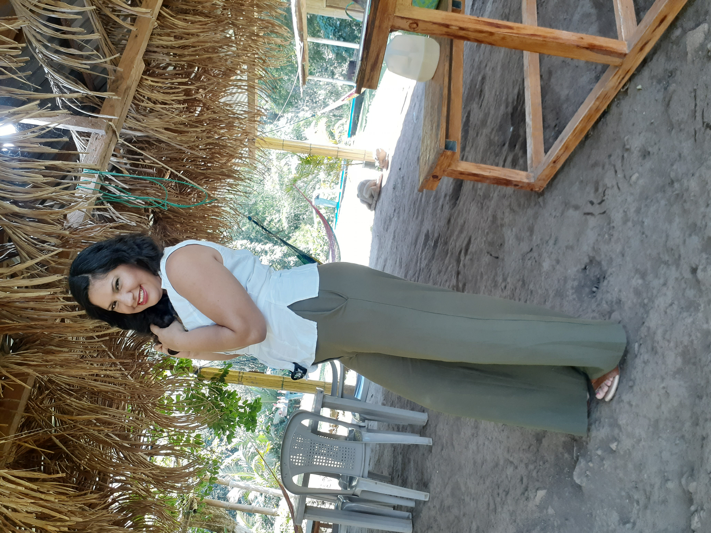
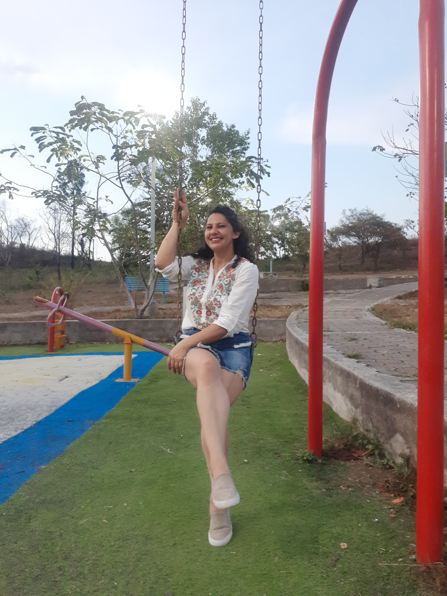
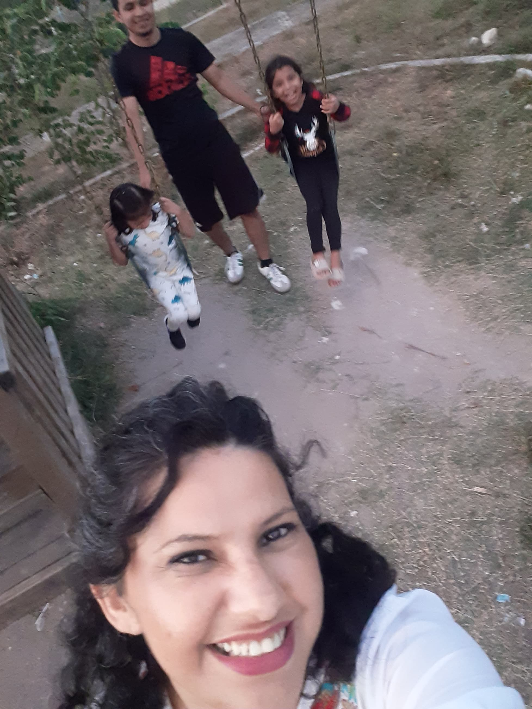
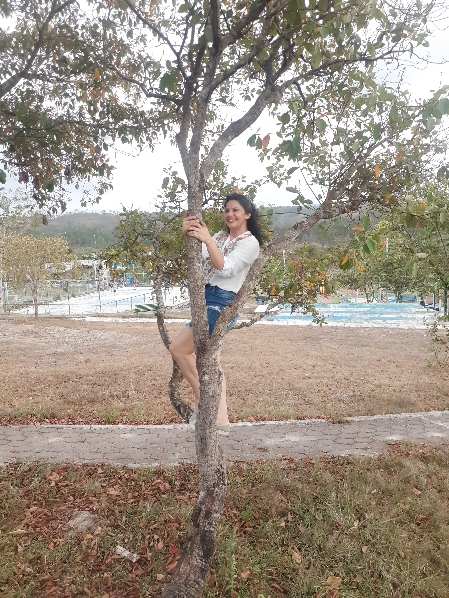
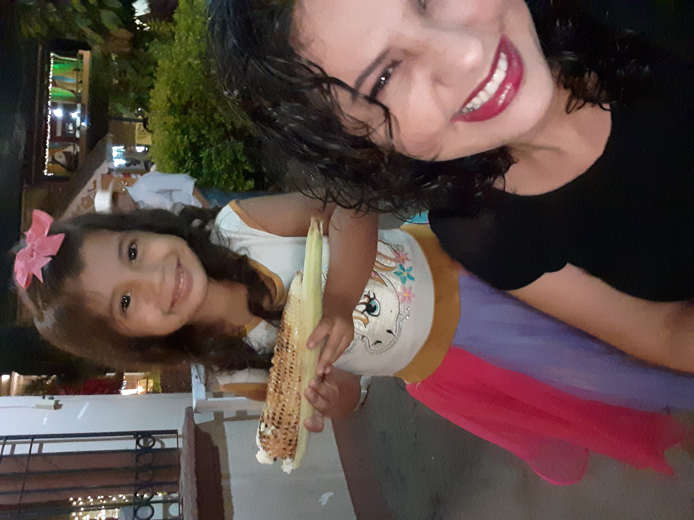
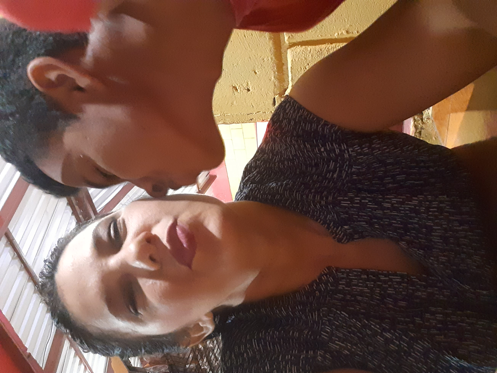
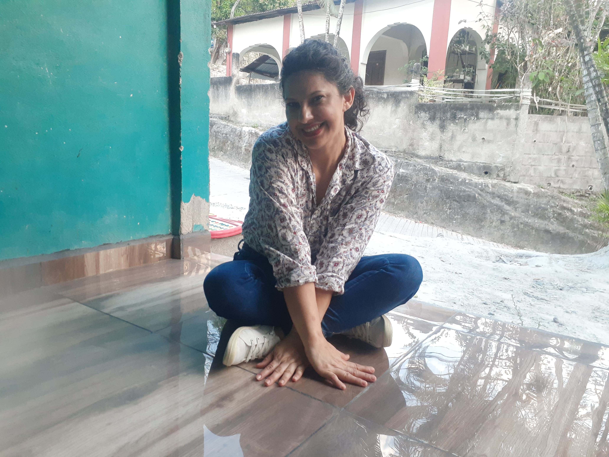
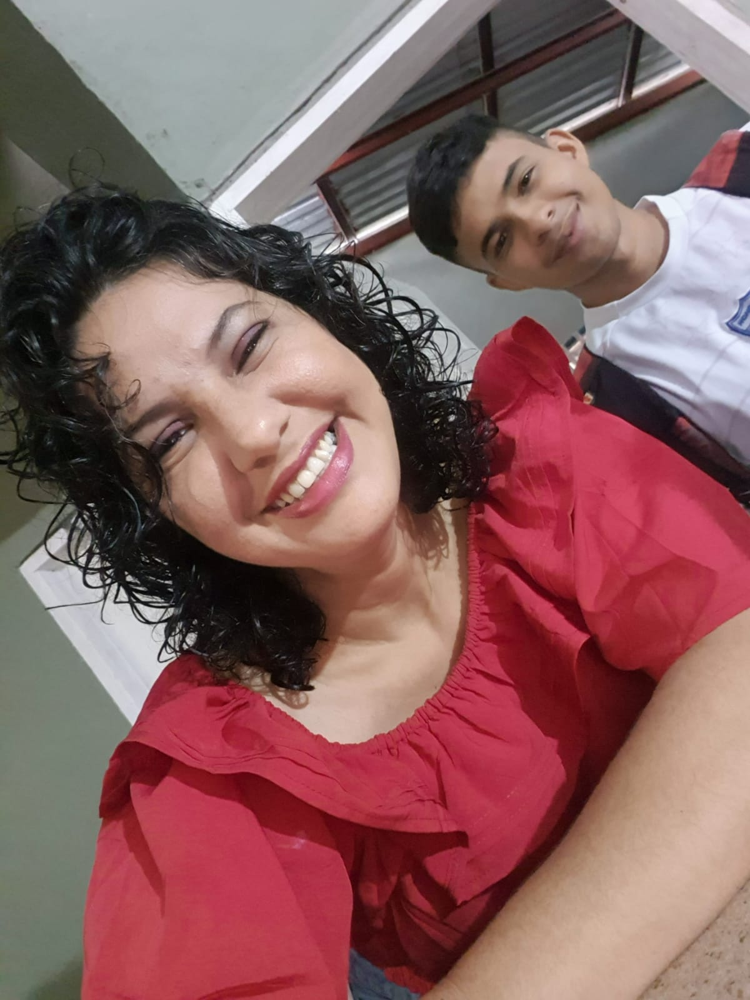
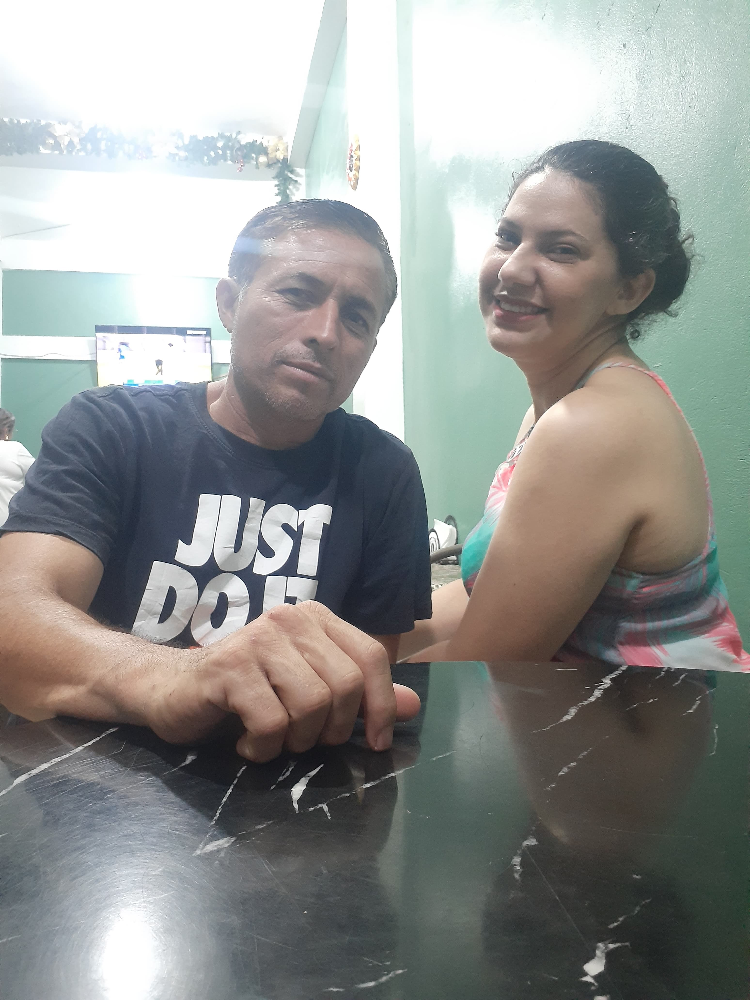
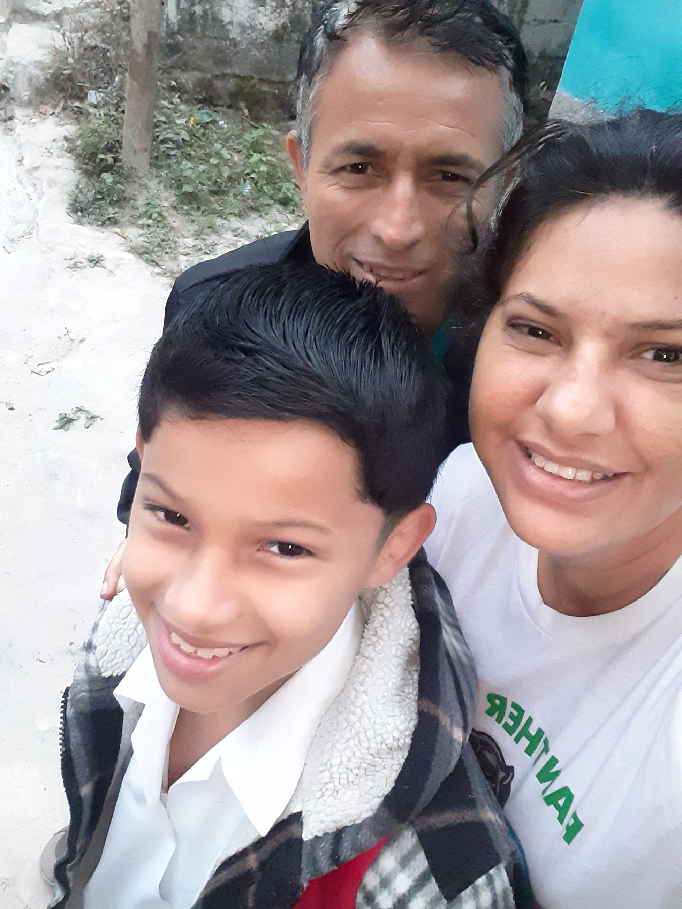
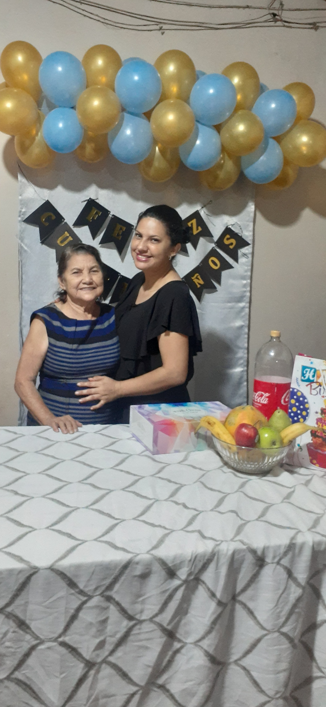


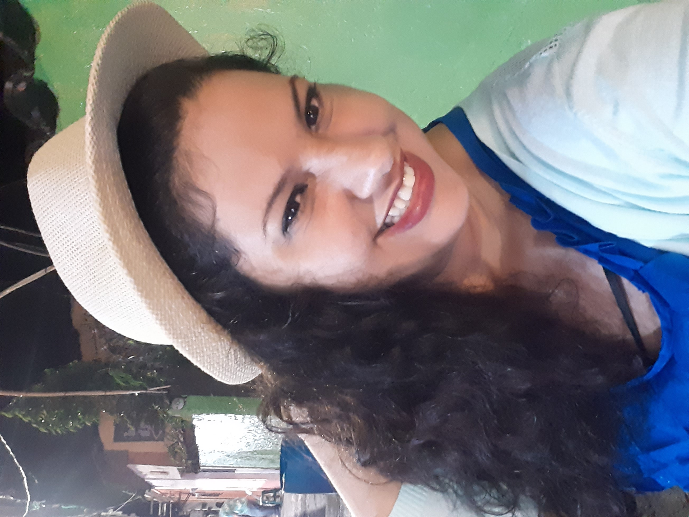
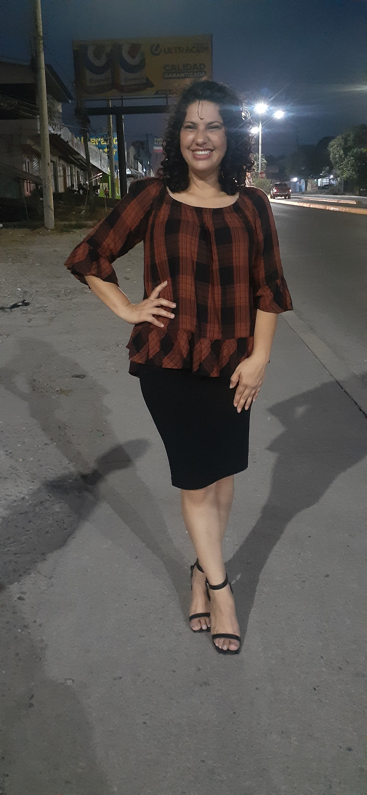
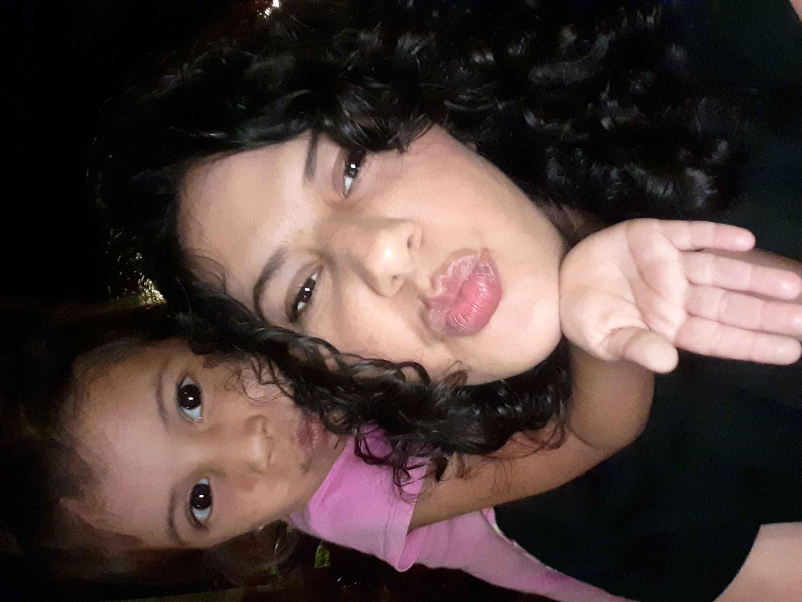

Gracias por ser mi guía, mi apoyo y mi corazón.
Querida Mamá,
Hoy me tomé un momento para escribirte algo que, aunque muchas veces no sé cómo decir con palabras, siento profundamente en mi corazón.
Quiero que sepas que te admiro muchísimo. Admiro tu fortaleza, tu paciencia infinita, tu capacidad de estar ahí siempre, incluso cuando no lo merezco. Admiro cómo sigues adelante, aunque estés cansada, aunque te preocupes por todos y a veces no por ti. Eres el corazón de esta casa, y sin ti todo estaría apagado.
Soy consciente de que soy joven, inmaduro a veces, y de que digo cosas que duelen o actúo mal sin pensar. No siempre tengo la cabeza en su lugar, y a veces me dejo llevar por mis emociones, por mi enojo o mi orgullo. Pero eso no significa que no me importe lo que haces por mí, ni mucho menos que no te valore. Al contrario, sé que sin ti estaría perdido. Sin tus regaños, tus consejos, tu ejemplo, tu comida, tus abrazos… estaría muchísimo peor.
También quiero decirte que valoro profundamente todo el esfuerzo que haces cada día, tú y papá, trabajando duro, saliendo adelante para que a mí no me falte nada. Sé que no es fácil, que llegan cansados, y aun así están ahí para mí. Aprecio todo eso aunque a veces me quede callado. No hay día en que no piense en lo afortunado que soy por tenerlos.
Por eso te pido perdón. Perdón por no saber demostrarte todo lo que te amo como debería. Perdón por mis palabras tontas o mis actitudes cerradas. Estoy creciendo, aprendiendo poco a poco, y aunque me cueste, quiero que sepas que intento ser mejor cada día… porque tú mereces eso: lo mejor de mí.
Mamá, gracias por no rendirte conmigo. Gracias por estar incluso cuando no te lo pido, por preocuparte aunque no lo notes, por amarme incluso cuando yo no me entiendo ni a mí mismo. Y aunque a veces no lo diga, te amo con todo mi corazón. Más de lo que las palabras pueden expresar.
Feliz día, mamá. Hoy y siempre.
Con todo mi cariño y gratitud,
— Su hijo Marcos CedilloTe voy a dar una razón para que llores de verdad. 💕
Mientras tú estés bajo mi techo... 💕
Algún día me lo vas a agradecer. 💕
Porque lo digo yo y punto. 💕

Mientras vivas en esta casa, se hace lo que yo diga. 💕
Voy a contar hasta tres... 💕
¿Crees que nací ayer? 💕
Y cuando tengas hijos, te vas a acordar de mí. 💕
Como vaya yo y lo encuentre 💕
No me importa lo que hagan los demás, tú no. 💕